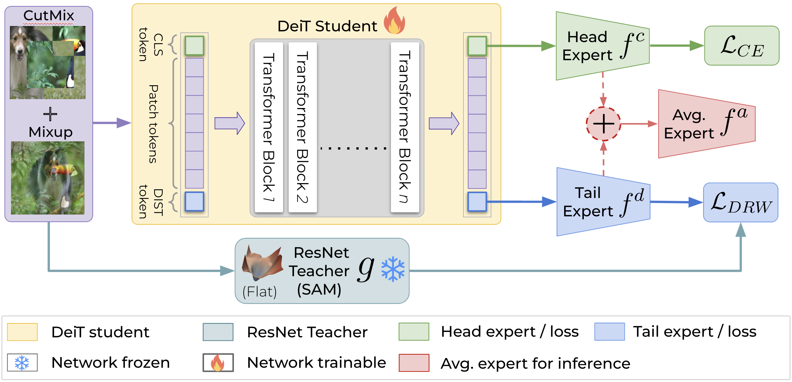
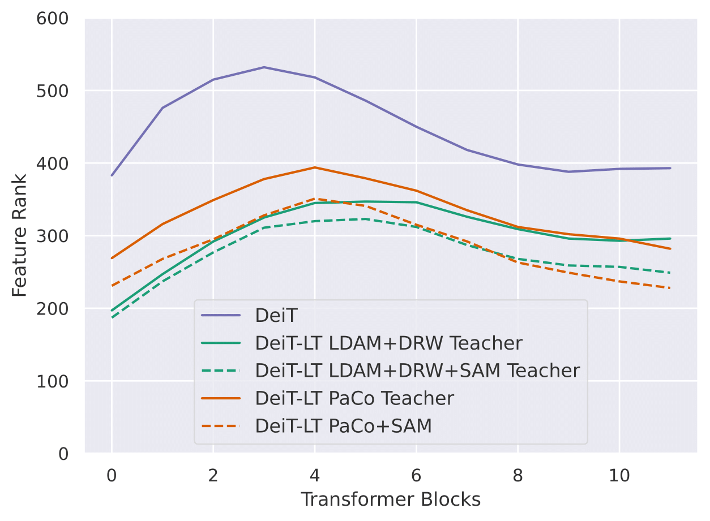
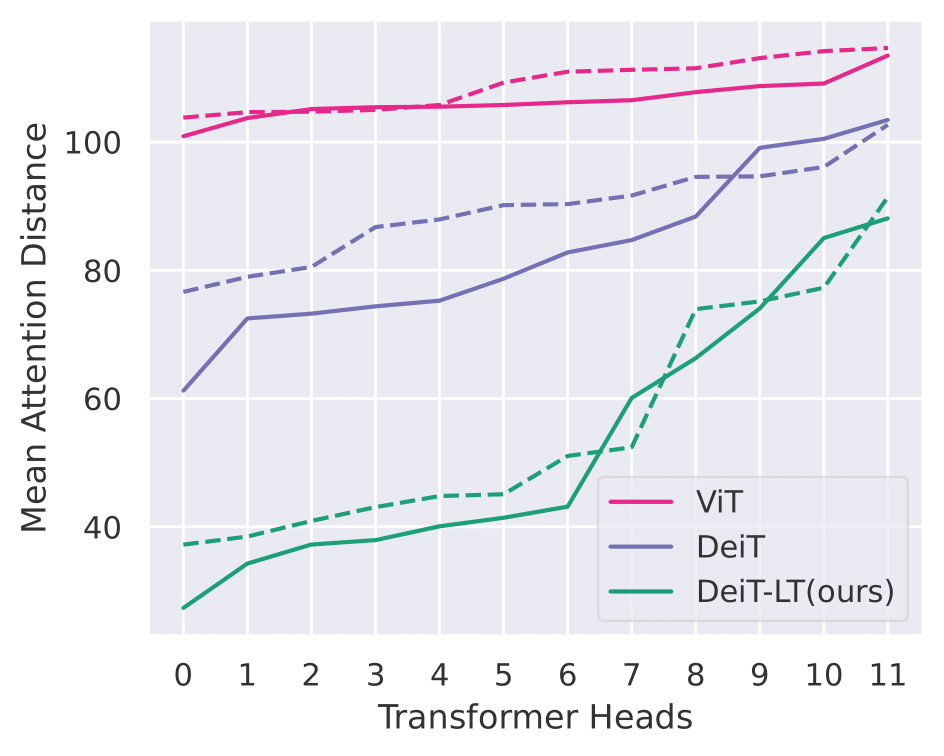

Proposed Method

-
• Distillation via Out-of-Distribution images: We propose to distill knowledge from a CNN teacher through OOD images generated using CutMix and Mixup. The distillation is done via the DIST token as follows:
$$\mathcal{L}_{dist} = \mathcal{L}_{CE} (f^{d}(x), y_{t}), y_t = \arg \max_{i} g(x)_{i}$$ The out-of-distribution distillation leads to diverse experts, which become more diverse with deferred re-weighting on the distillation token (DRW).
The out-of-distribution distillation leads to diverse experts, which become more diverse with deferred re-weighting on the distillation token (DRW). - Deferred Re-Weighting (DRW) for distillation: We introduce DRW with the distillation loss to encourage the DIST token to focus on the tail classes. This leads to diverse CLS and DIST tokens that specialize on the majority and minority classes, respectively. $$\mathcal{L} = \frac{1}{2}\big{\{}\mathcal{L}_{CE}(f^{c}(x), y) + \mathcal{L}_{DRW} (f^{d}(x), y_{t})\big{\}}$$ $$\mathcal{L}_{DRW} = -w_{y_t} \; log (f^{d}(x)_{y_t})$$ $$w_y = {1}/\{1 + (e_y - 1)\mathbb{1}_{\mathrm{epoch \geq K}}\}, \textrm{ where } e_y=\frac{1-\beta^{N_y}}{1-\beta}$$
-
• Low-rank features via SAM teachers: To further improve the generalizability to tail classes, we propose to distill teachers that have been trained with Sharpness Aware Minimization (SAM).We show the rank of features for DIST token, where we demonstrate that students trained with SAM are more low-rank in comparison to baselines.
-
• Induction of local features: DeiT-LT contains heads that attend locally, like CNN, in the neighborhood of the patch in early blocks (1,2) and hence learn more local generalizable features.We plot the Mean Attention Distance for the patches across the early self attention block 1 (solid) and block 2 (dashed) for baselines, where we find that DeiT-LT leads to highly local and generalizable features.